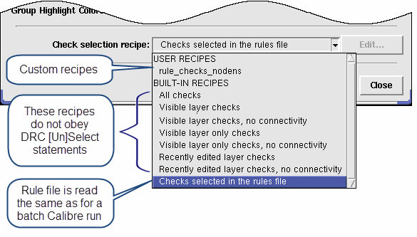

Calibre RealTime
uses a standard Calibre nmDRC rule file. Check recipes control which
checks in the rule file are executed during the Calibre RealTime run.
Procedure
- Choose Verification > RealTime > Options to
open the Calibre RealTime Options dialog box, or click the Options button
(
 ) on the integrated
toolbar.
) on the integrated
toolbar.
- Specify the Calibre rule file
in the “Rule file” text field.
- Click Reload to
load the rule file.
Note: The rule file is loaded automatically the first time
it is needed. If you make changes to the rule file during a Calibre
RealTime session, you must manually reload the rule file in order for
the new rule file to be used.
- (Optional) Select options
in the dialog box, if desired; the defaults are suitable for most
runs. See “Calibre RealTime Options Dialog Box” for a
definition of each option.
If you want to save a summary file of the run and the
DRC results as an ASCII results database (RDB), select the Output
files tab and check the corresponding options.
- Select the check recipe as
follows:
Checks selected in the rules file (default)
— This built-in recipe uses the Calibre rule file just as a batch
run of Calibre does.
Other built-in check recipes — You
can select a recipe that only runs checks on certain layers, excludes
certain types of checks, or runs all checks in the rule file.
Because these built-in
recipes do not obey DRC [Un]Select Check statements in the rule file, the recipes may execute
checks in the rule file that would not be executed during a batch
Calibre run. The recipe “Checks selected in the rules file” is the
only built-in recipe that obeys DRC [Un]Select Check statements.
See “Built-In Check Recipes”.
User recipes —
You can select a previously defined custom check recipe. See “Basic Editing of Check Selection Recipes”.
Figure 1. Selecting a Check
Recipe in Calibre RealTime (DESIGNrev)
- Proceed to “Running Calibre RealTime in Window, Area, or Cell Mode with Calibre DESIGNrev” or “Running Calibre RealTime in Run on Edit Mode with Calibre DESIGNrev”.